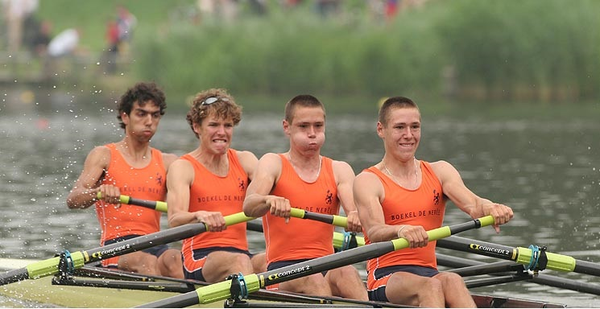
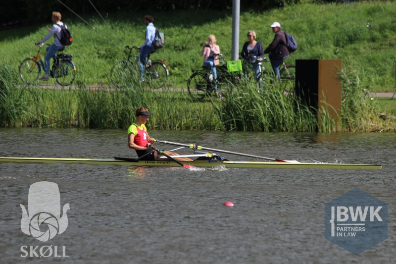
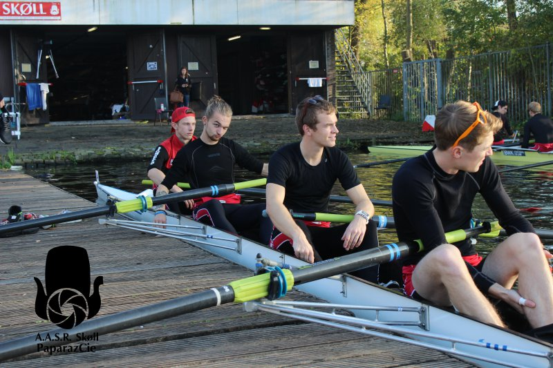
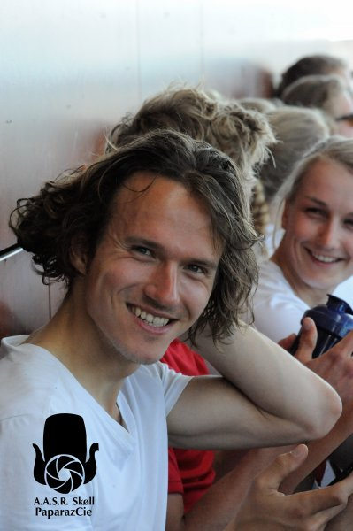
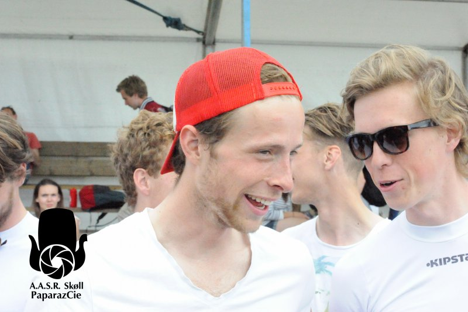
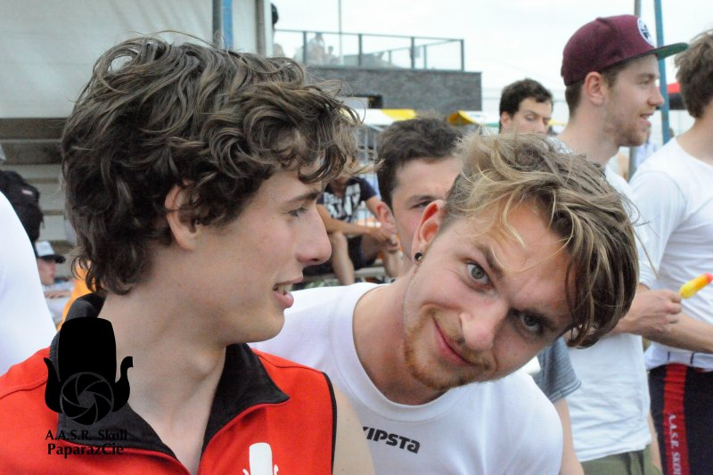
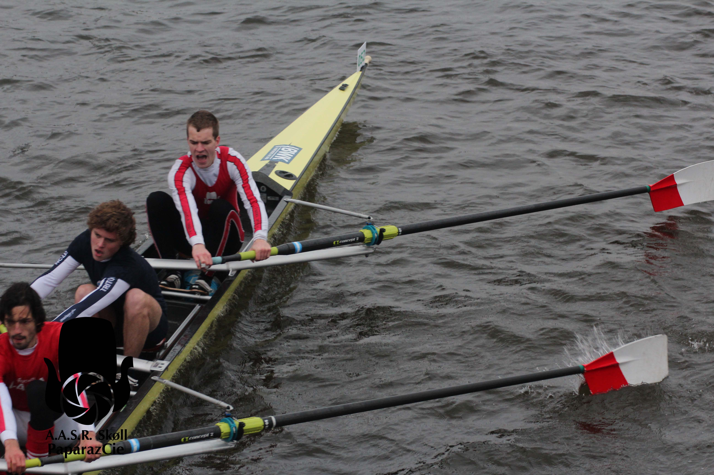
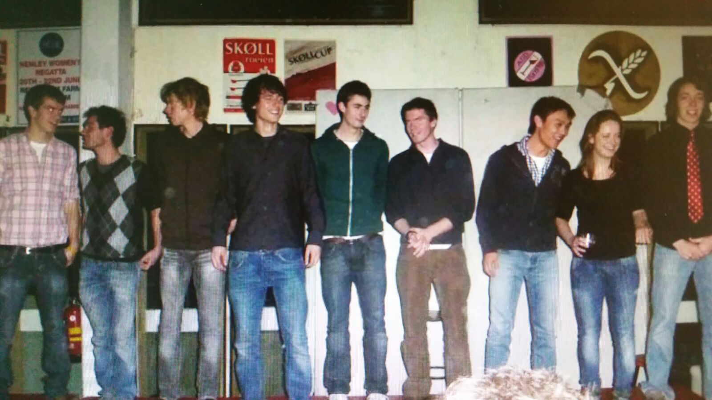

Vroeger

... was alles beter.
2016-2017
NSRF 2 juli 2017 E1x

NKIR 2016 06:35.0

November4444

2015-2016
Damen 2016



NKIR 2015
2014-2015
Heineken Roeivierkamp

2011-2012
Trainingskamp Sevilla
Met dank aan OLfilmpjes
Starring: Thijs, Sjoerd, Joost, Adriaan, Koen, Tsjip, Jasper, Eelco
2KH presenteert zichzelf

Wat waren ze schattig hè?!
vlnr Jasper, Sander, Jan, Sjoerd, Duncan, Eelco, Jack, Eva, Pascal
© Oudlicht 2017. Foto's van de Paparazzi of eigen fotografie of anders vermeld. Opmerkingen over rechten, neem aub contact op.